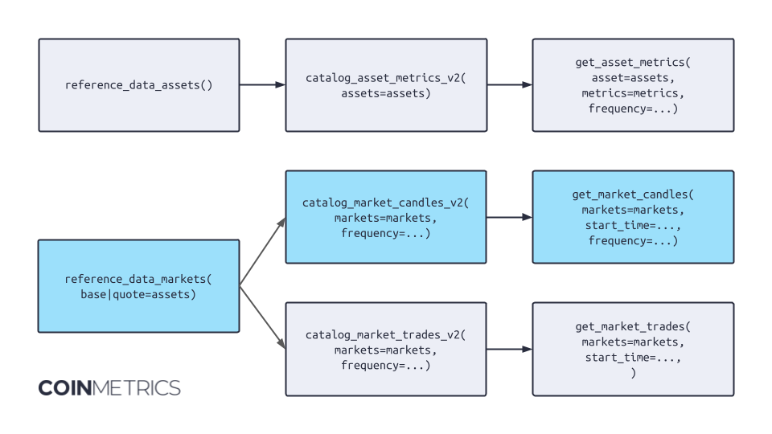

Best Practices¶
This section will teach you the best practices for using the Python API Client. See also this guide for more general guidelines on how to use the Coin Metrics API.
Page Size¶
Queries can be made much faster by increasing the page_size parameter. The higher the page_size, the faster the query, with a maximum of page_size=10000
Wildcards¶
Wildcards (*) allow you to query several entities, such as assets, exchanges, and markets, as one parameter. For example:
# Get prices for all assets
asset_metrics = client.get_asset_metrics(assets='*', metrics='PriceUSD', limit_per_asset=1)
# Get btc-usd candles for all exchanges
market_candles_btc_usd = client.get_market_candles(markets=['*-btc-usd-spot'], limit_per_market=10)
# Get all spot exchanges and pairs
exchanges_reference = client.reference_data_exchanges().to_list()
market_candles_spot = client.get_market_candles(markets=[f'{exchange}-*-spot' for exchange['exchange'] in exchanges_reference], limit_per_market=10)
Using Catalog to Determine Assets or Markets¶
Most common use cases can be achieved following the pattern shown below.

For example, let's follow the flow indicated in light blue.
Step 1: Obtain all possible markets with a certain criterion, e.g. type='spot' or base='btc'.
# Step 1
spot_markets = client.reference_data_markets(type='spot').to_dataframe()
Step 2: Query the catalog for the data set we desire, e.g. market candles, to deliver more metadata for the markets we identified in step 1. This step will allow us to remove, using appropriate python code, to remove obsolete markets.
# Step 2
cat = client.catalog_market_candles_v2(
markets=list(spot_markets.market),
).to_dataframe()
cat = cat.loc[
(cat.frequency == '1m') &
(cat.max_time > datetime.now(timezone.utc) - timedelta(days=2))
].reset_index(drop=True)
The code above, for example, whittles down all possible market candles to only the ones with 1m frequency and data available until at least 2 days ago. This means it eliminates obsolete markets.
Step 3: Obtain the actual timeseries data, and we can be certain that all markets exist and are relevant to our use case.
A similar logic can be applied when downloading asset metrics. Rather than going straight to the get_asset_metrics
endpoint, we recommend using the reference data and catalog endpoints to craft the list of assets and metrics.
Of course, a user may want to start with the catalog of available metrics and only later join the asset reference
data -- the API is flexible and stateless.
Parallel Execution¶
There are times when it may be useful to pull in large amounts of data at once. The most effective way to do this when calling the CoinMetrics API is to split your request into many different queries. This functionality is now built into the API Client directly to allow for faster data export:
import os
from coinmetrics.api_client import CoinMetricsClient
if __name__ == '__main__':
client = CoinMetricsClient(os.environ['CM_API_KEY'])
coinbase_eth_markets = [market['market'] for market in client.catalog_market_candles_v2(exchange="coinbase", base="eth")]
start_time = "2024-03-01"
end_time = "2024-05-01"
client.get_market_candles(
markets=coinbase_eth_markets,
start_time=start_time,
end_time=end_time,
page_size=1000
).parallel().export_to_json_files()
This feature splits the request into multiple threads and either store them in separate files (in the case of .parallel().export_to_csv_files() and .parallel().export_to_json_files)
or combine them all into one file or data structure (in the case of .parallel().to_list(), .parallel().to_dataframe(),
.parallel().export_to_json()). It's important to know that in order to send more requests per second to the CoinMetrics
this uses the parallel tasks features in Python's concurrent.futures
package. This means when using this feature, the API Client will use significantly more resources and may approach
the Coin Metrics rate limits.
In terms of resource usage and speed, these usages are in order from most performant to least:
.export_to_json_files().export_to_csv_files().to_list().export_to_json().to_dataframe()
Splitting Parameter Queries¶
There is a feature time_increment that can be used to split a single query into many based on time range, and then
combine them later. Consider this example where we speed up getting a 2 months worth of BTC ReferenceRateUSD data into
many parallel threads to create a dataframe faster:
import datetime
import os
from coinmetrics.api_client import CoinMetricsClient
from dateutil.relativedelta import relativedelta
client = CoinMetricsClient(os.environ.get("CM_API_KEY"))
start_time = datetime.datetime.now()
assets = ["btc", "eth", "sol"]
if __name__ == '__main__':
client.get_asset_metrics(
assets=assets,
metrics="ReferenceRateUSD",
frequency="1m",
start_time="2024-01-01",
end_time="2025-01-01",
page_size=1000,
end_inclusive=False).parallel(
time_increment=relativedelta(months=1)).export_to_csv("btcRRs.csv")
print(f"Time taken parallel: {datetime.datetime.now() - start_time}")
start_time = datetime.datetime.now()
client.get_asset_metrics(
assets=assets,
metrics="ReferenceRateUSD",
frequency="1m",
start_time="2022-03-01",
end_time="2023-03-01",
page_size=1000,
end_inclusive=False).export_to_csv("btcRRsNormal.csv")
time_increment=relativedelta(months=1) so that means we will split the threads up by month, in
addition to by asset. So this will run a total 36 separate threads, 12 threads for each month x 3 threads for each asset.
The difference it takes in time is dramatic:
Exporting to dataframe type: 100%|██████████| 36/36 [00:00<00:00, 54.62it/s]
Time taken parallel: 0:00:36.654147
Time taken normal: 0:05:20.073826
Please note that for short time periods you can pass in a time_increment with datetime.timedelta to specify up to
several weeks, for larger time frames you can use dateutil.relativedelta.relativedelta in order to split requests
up by increments of months or years.
General Parallelization Guidelines¶
- If you are using a small
page_sizeand trying to export a large number amount of, this will be your biggest bottleneck. Generally the fastestpage_sizeis1000to10000 - If you are unsure why an action is taking a long time, running the CoinMetricsClient using
verbose=Trueordebug=Truecan give better insight into what is happening under the hood - The parallel feature is best used when you are exporting a large amount of data, that can be split by query params into
many smaller requests. A good example of this is market candles over a long time frame - if you are querying hundreds
of markets and are sure there will be data, using
.parallel().export_to_csv_files("...")can have a huge performance increase, if you are just querying a single market you will not see a difference - The parallel feature is highly configurable, there is several configuration options that may be suitable for advanced
users like tweaking the
max_workersparameter, or changing the defaultProcessPoolExecutorto aThreadPoolExectuor - Using multithreaded code is inherently more complex, it will be harder to debug issues with long running queries when running parallel exports compared to normal single threaded code
- For that reason, this tool is best suited for exporting historical data rather than supporting a real time production system.
- The methods that create separate files for each thread will be the safest and most performant to use -
.export_to_csv_files()and.export_to_json_files(). Using the methods that return a single output -.export_to_csv(),export_to_list(), and.export_to_dataframe()need to join the data from many threads before it can be returned, this may use a lot of memory if you are accessing data types like market orderbooks or market trades and could fail altogether - If using
export_to_csv/json_files()functions, note that by default they will be saved in the directory format/{endpoint}/{parallelize_on}. For example, inexport_to_json_files(),client.get_market_trades("coinbase-eth-btc-spot,coinbase-eth-usdc-spot").parallel("markets")will create a file each like ./market-trades/coinbase-eth-btc-spot.json, ./market-trades/coinbase-eth-usdc-spot.jsonclient.get_asset_metrics('btc,eth', 'ReferenceRateUSD', start_time='2024-01-01', limit_per_asset=1).parallel("assets,metrics", time_increment=timedelta(days=1))will create a file each like ./asset-metrics/btc/ReferenceRateUSD/start_time=2024-01-01T00-00-00Z.json, ./asset-metrics/eth/ReferenceRateUSD/start_time=2024-01-01T00-00-00Z.json - If you get the error
BrokenProcessPoolit might be because you're missing a main() function
Lazy Execution¶
Lazy execution allows you to collect data without executing code right away, giving you flexibility on how to parse your data before performing large computation. This is especially useful if, say, you want to filter for a field which is not a parameter of the API.
For more information on how to use a Lazy API, see the polars guide.
from datetime import datetime, timedelta
import polars as pl
import pandas as pd
import time
from coinmetrics.api_client import CoinMetricsClient
import os
client = CoinMetricsClient(os.environ.get("CM_API_KEY"))
# Example 1: Prices where Tether is above 1
t0 = time.time()
eager_exec_pandas = client.get_asset_metrics(assets="usdt", metrics="ReferenceRateUSD", end_time="2025-01-01", page_size=10000, frequency='1h').to_dataframe()
eager_exec_pandas = eager_exec_pandas.loc[eager_exec_pandas.ReferenceRateUSD >= 1.00]
t1 = time.time()
print(f"Pandas: {t1-t0}s")
t0 = time.time()
eager_exec_polars = client.get_asset_metrics(assets="usdt", metrics="ReferenceRateUSD", end_time="2025-01-01", page_size=10000, frequency='1h').to_dataframe(dataframe_type="polars")
eager_exec_polars = eager_exec_polars.filter(pl.col("ReferenceRateUSD") >= 1.00)
t1 = time.time()
print(f"Polars (Eager): {t1-t0}s")
t0 = time.time()
lazy_exec = client.get_asset_metrics(assets="usdt", metrics="ReferenceRateUSD", end_time="2025-01-01", page_size=10000, frequency='1h').to_lazyframe()
lazy_exec = lazy_exec.cast({"change": pl.Float32}).filter(pl.col("ReferenceRateUSD") >= 1.00)
t1 = time.time()
print(f"Polars (Lazy): {t1-t0}s")
# Example 2: Fees where change >= 0.001 BTC
start_time = datetime.now()-timedelta(hours=3)
end_time = datetime.now()
t0 = time.time()
eager_exec_pandas = client.get_list_of_balance_updates_v2(asset="btc", accounts="FEES", start_time=start_time, end_time=end_time, page_size=10000).to_dataframe()
eager_exec_pandas = eager_exec_pandas.loc[eager_exec_pandas.change >= 1.0E-3]
t1 = time.time()
print(f"Pandas: {t1-t0}s")
t0 = time.time()
eager_exec_polars = client.get_list_of_balance_updates_v2(asset="btc", accounts="FEES", start_time=start_time, end_time=end_time, page_size=10000).to_dataframe(dataframe_type="polars")
eager_exec_polars = eager_exec_polars.filter(pl.col("change") >= 1.0E-3)
t1 = time.time()
print(f"Polars (Eager): {t1-t0}s")
t0 = time.time()
lazy_exec = client.get_list_of_balance_updates_v2(asset="btc", accounts="FEES", start_time=start_time, end_time=end_time, page_size=10000).to_lazyframe()
lazy_exec = lazy_exec.cast({"change": pl.Float32}).filter(pl.col("change") >= 1.0E-3)
t1 = time.time()
print(f"Polars (Lazy): {t1-t0}s")